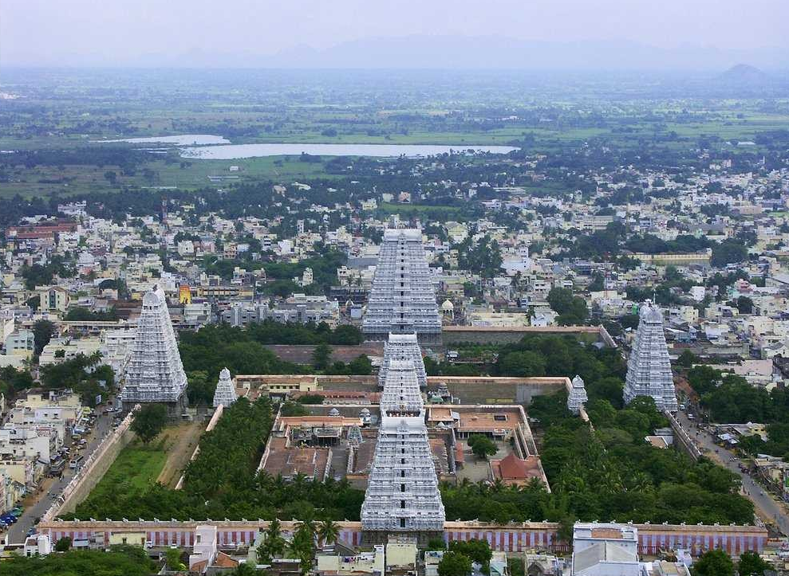
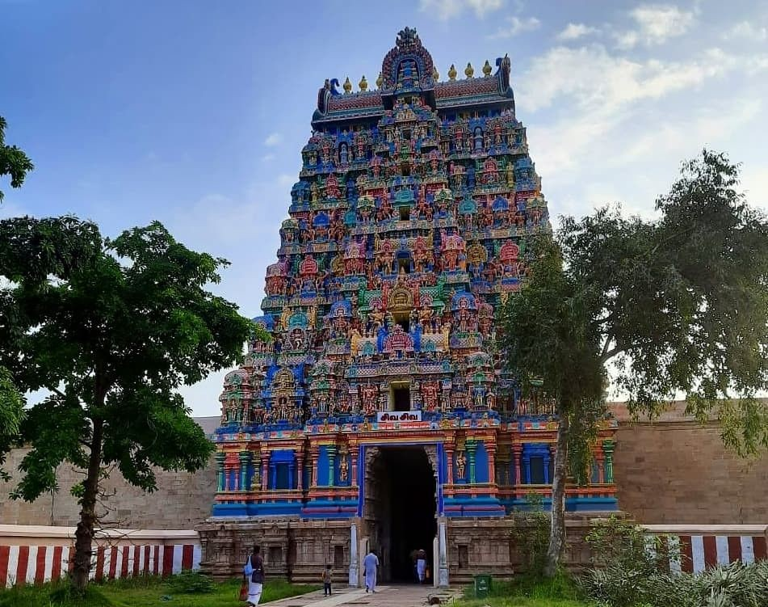

Timeless Temples of Tamil Nadu
"Tamil temples are the native language of art, architecture and spirituality."

Meenakshi Amman Temple, Madurai
மீனாக்ஷி அம்மன் திருக்கோவில்,
மதுரை

Brihadeeswarar Temple, Thanjavur
பெருவுடையார் திருக்கோவில்,
தஞ்சாவூர்

Ramanathaswamy Temple, Rameswaram
இராமநாதசுவாமி திருக்கோவில்,
இராமேஸ்வரம்

Sri Ranganathaswamy Temple, Srirangam, Trichy
அரங்கநாதசுவாமி திருக்கோவில்,
ஸ்ரீரங்கம், திருச்சி

Thillai Natarajar Temple, Chidambaram
நடராஜர் திருக்கோவில்,
சிதம்பரம்

Kapaleeshwarar Temple, Mylapore, Chennai
கபாலீஸ்வரர் திருக்கோவில்,
மயிலாப்பூர், சென்னை
Subramaniya Swamy Temple, Thiruchendur
சுப்பிரமணியசுவாமி திருக்கோவில்,
திருச்செந்தூர்

Arunachaleswarar Temple, Tiruvannamalai
அண்ணாமலையார் திருக்கோவில்,
திருவண்ணாமலை

Samayapuram Mariyamman Temple, Samayapuram, Trichy
சமயபுரம் மாரியம்மன் திருக்கோவில்,
திருச்சி

Jambhukeswarar Temple, Thiruvanaikaval, Trichy
ஜம்புகேஸ்வரர் திருக்கோவில், திருவானைக்காவல்,
திருச்சி